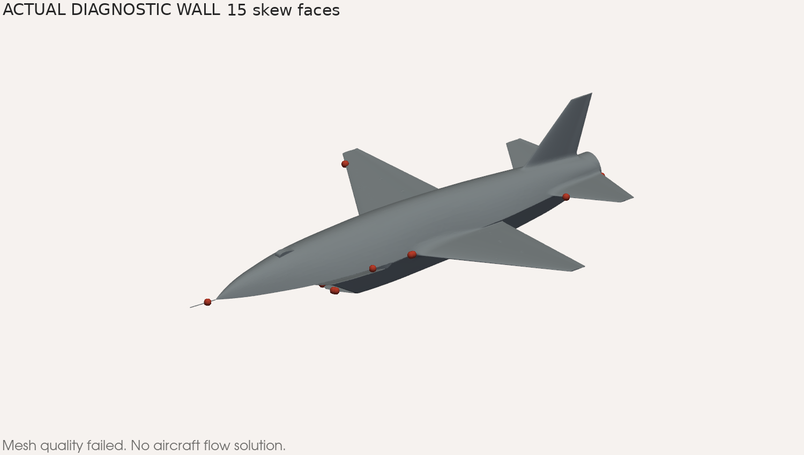

The aircraft mesh fails qualification. No aircraft aerodynamic coefficients are available.
The requested AoA and sideslip sweep requires a qualified aircraft mesh. This report separates the completed workflow test from the incomplete aircraft study.
The GCP workflow runs, but the aircraft remains at the geometry and mesh gate.
Reference readback: native controls and normalization receipt. These values define the planned study, not a validated flight condition.
The conversion changes stored coordinates. The evidence does not establish why the intersection counts differ. A closed mesh alone does not prove fidelity.
Detailed trial logs and topology records are retained in the diagnostic archive inspection. No rejected surface was promoted.

The diagnostic case was explicitly restricted to meshing. The runner stopped at the quality gate and did not launch the aircraft solver.
Additional strict diagnostics recorded short edges, concave faces and warped faces. The retrieved all-geometry diagnostic log is incomplete; it is not a passing check.
Complete governing checkMesh log · Workflow receipt
A small annular fixture exercised surface checks, volume meshing, decomposition, eight solver iterations, forces and field output on GCP.
Actual fixture analysis. No fixture coefficient is presented as an aircraft coefficient.
The proposed matrix was adopted as the stated default after the optional range question. All cases use the same speed and geometry.
The prepared setup uses a compressible steady solver and SST turbulence. Freestream turbulence values are unmeasured tutorial assumptions. They require sensitivity assessment.
Saved sweep plan · Case generator · Convergence and force-axis audit
GCP confirms fury-mesh-benchmark-20260908 is TERMINATED. Stop time: 2026-09-08T11:37:48.378-07:00.
Cloud state receipt · New native alternatives presentation
All numerical results above come from retained native or OpenFOAM execution records. The atmosphere is an explicit assumption. The alternatives have no aerodynamic results. Static report checks do not establish browser layout or interaction.